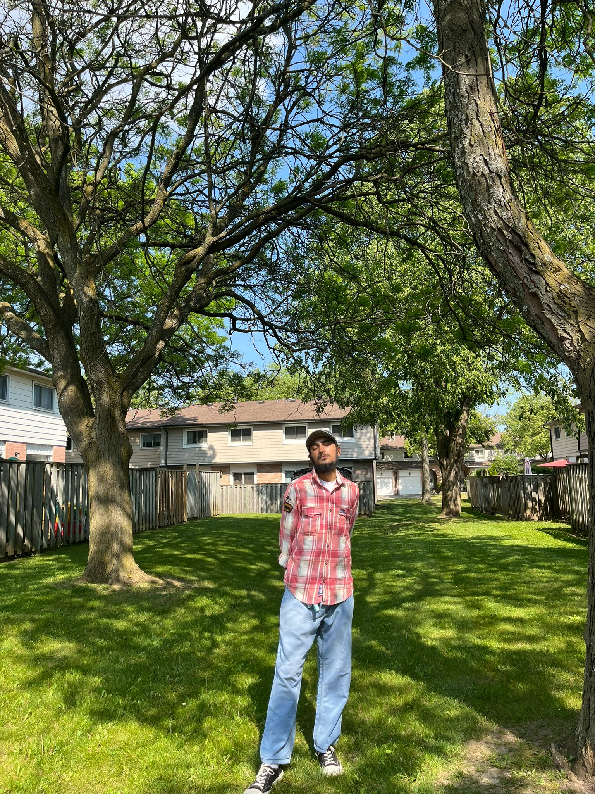

I am 20 years old, studying Computer Programming from Georgian college. I was born and brought up in Punjab (India) and moved to Canada for higher education after 12th. I studied Physics, Chemistry and Maths in senior year. I am very inquisitive and firmly believes in learning new things everyday. I love to read, write, run, do calisthenics, art and craft, watch shows, explore music, walking and nature. I love participating in extra curricular activities since I was in school. I was national level debater for three years and was awarded the best speaker for a year. Running helps me relax myself, the form of activity which was just a help to me during my studies turned into passion and I represented at the state level cross country. I am getting back to running since I came to Canada, and has joined the 'Queer running club' which is a Toronto based running club. My first official race will be the 'Pride and Remembrance Run' which is a fundraising run for many organizations. I also love to explore new places, watch sunsets, enjoy me time at the beach, listen to music and write.
A Little More About Me

A List of My Favourite Things
- Favourite book : 'On Earth We Are Briefly Gorgeous' by Ocean Vuong
- Favourite color : Olive green
- Favourite artist : Lana del rey
- Favourite album : Back to Black by Amy Winehouse
- Favourite food : Cholle Kulchey